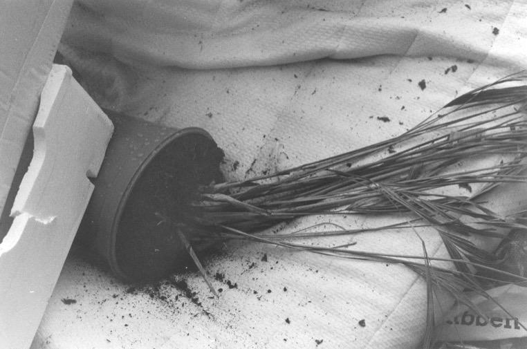

the phrase 'qué dolor' has been with me ever since high school spanish class. these two words would leave señor gomez’s mouth when a student-athlete limped in with a fresh cast or after sharing a tragic song about political unrest and heartbreak in his home country of columbia. the repetition of this phrase, alongside these soft and subtle moments, taught me that it was okay to recognize pain. a sensitivity and attention to detail i hope to bring to my own work.
photograph exhibited at dark gallery, københavn ø as a contribution to 'wasteland' (2023). a group exhibition on the relationship between nature and urban systems as a part of the city-wide golden days cultural festival.